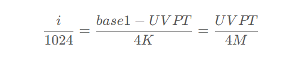
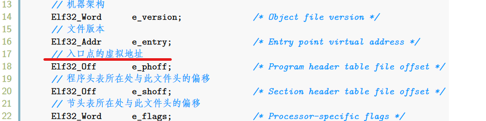

BUAAOS-Lab3 实验报告
思考题
Thinking 3.1
请结合 MOS 中的页目录自映射应用解释代码中
e->env_pgdir[PDX(UVPT)] = PADDR(e->env_pgdir) | PTE_V的含义。
在MOS中的页目录自映射应用中提到：而 MOS 中，将页表和页目录映射到了用户空间中的 0x7fc00000-0x80000000（共 4MB）区域，这意味着 MOS 中允许在用户态下通过 UVPT 访问当前进程的页表和页目录。结合mmu.h中的宏定义#define UVPT (ULIM - PDMAP)，我们可以得知UVPT即为用户地址空间（虚存）中起始页表项的地址。
设映射到页目录自身的表项为页目录的第i项，页目录基地址为base1，页表基地址为UVPT基于自映射关系，我们可以得出如下关系式：

解得：
1 | i = UVPT >> 22; |
基于上述分析不难理解，这条语句是将页目录的起始物理地址自映射到对应的页目录项。
Thinking 3.2
elf_load_seg以函数指针的形式，接受外部自定义的回调函数map_page。请你找到与之相关的data这一参数在此处的来源，并思考它的作用。没有这个参数可不可以？为什么？
来源：
在include/elf.h中可以找到typedef int (*elf_mapper_t)(void *data, u_long va, size_t offset, u_int perm, const void *src,size_t len);这样一条语句。可知void *data这一参数的来源是elf_mapper_t这一函数指针类型的形参列表。
作用：
在env.c中的load_icode函数中对elf_load_seg有如下调用：
1 | elf_load_seg(ph, binary + ph->p_offset, load_icode_mapper, e) |
在形参void *data的位置传入了进程控制块指针e。进一步地，我们阅读load_icode_mapper的实现：
1 | static int load_icode_mapper(void *data, u_long va, size_t offset, u_int perm, const void *src,size_t len) { |
可知env这个结构控制块指针在load_icode_mapper这个回调函数里的作用是为page_insert函数提供了参数env->env_pgdir和env->env_asid。在我看来，elf_load_seg是一个被要求满足多种调用需求的函数，而对不同调用需求的满足则是通过传入不同的mapper回调函数和data函数指针来实现的。而又因为需求不同，传入data指针的类型也会存在差异，因此，采用以void类型传入，在对应的mapper回调函数中进行相应的转型可以极大程度上提升elf_load_seg函数的可复用性。
没有这个参数是万万不能的，因为这样就无法满足回调函数的参数需求了。
Thinking 3.3
结合 elf_load_seg 的参数和实现，考虑该函数需要处理哪些页面加载的情况。
- 如果段的虚拟地址与页面边界不对齐，需要将二进制文件的前一个页面映射到虚拟地址空间中。偏移量为
offset = va - ROUNDDOWN(va, BY2PG)。 - 如果二进制文件大小小于一个页面，则需要将该页面映射到虚拟地址空间中。此时，需要使用
map_page回调函数来分配和映射物理页面。 - 如果二进制文件大小大于一个页面，则需要将文件的每一页映射到虚拟地址空间中。同样需要使用
map_page回调函数来进行物理页面映射。 - 如果二进制文件大小小于段的内存大小，则需要继续分配和映射页面，直到达到段的内存大小为止。
Thinking 3.4
“这里的
env_tf.cp0_epc字段指示了进程恢复运行时 PC 应恢复到的位置。我们要运行的进程的代码段预先被载入到了内存中，且程序入口为e_entry，当我们运行进程时，CPU 将自动从 PC 所指的位置开始执行二进制码。”
思考上面这一段话，并根据自己在 Lab2 中的理解，回答：你认为这里的env_tf.cp0_epc存储的是物理地址还是虚拟地址?
PC 是CPU中用于记录当前运行代码在内存中的地址的寄存器，而我们知道，CPU发出的地址并不是物理地址，而是当前运行进程地址空间中的虚拟地址。而此处的env_tf.cp0_epc指示了进程恢复运行时 PC 应恢复到的位置，也就是说它记录的是一个PC值，基于我们上面的推理可知，env_tf.cp0_epc是一个虚拟地址。
而指导书也佐证了这一点（逃

Thinking 3.5
试找出 0、1、2、3 号异常处理函数的具体实现位置。8 号异常（系统调用）涉及的
do_syscall()函数将在 Lab4 中实现。
在文件genex.S中有如下宏：
1 | BUILD_HANDLER exception handler |
该宏具体的作用是构建一个对给定exception调用对应的handler函数的汇编函数。该宏在genex.S中有如下使用：
1 | BUILD_HANDLER tlb do_tlb_refill |
那么对于这道思考题，我们不难做出回答：对于0号异常，对应的handler的具体实现在genex.S中的汇编函数handle_int中：
1 | NESTED(handle_int, TF_SIZE, zero) |
而对于1号异常，handler的具体实现为tlbex.c中的do_tlb_mod函数；而对于2、3号异常，handler的具体实现为tlbex.c中的do_tlb_refill函数。
Thinking 3.6
阅读 init.c、kclock.S、env_asm.S 和 genex.S 这几个文件，并尝试说出enable_irq 和 timer_irq 中每行汇编代码的作用。
1 | LEAF(enable_irq) |
1 | timer_irq: /*in function `handle_int`*/ |
Thinking 3.7
阅读相关代码，思考操作系统是怎么根据时钟中断切换进程的。
其实指导书已经把流程梳理的比较清楚了，我在这里再归纳一下。
step1:异常分发
当硬件产生时钟中断时，处理器进入异常分发程序，具体到我们本次实验中就是entry.S中的exc_gen_entry:
1 | exc_gen_entry: |
step2:进一步细分中断类型
在上面的异常分发程序中，我们获取到的异常码为0(也就是中断异常)，在获取异常码后，便跳转到genex.S中相应的异常处理程序handle_int来进一步细分中断异常的类型:
1 | NESTED(handle_int, TF_SIZE, zero) |
step3:进程调度
调用sched.c中的schedule函数，通过时间片轮转算法来实现进程的调度。
本次实验的难点
本次实验的代码填空在仔细阅读指导书以及相关注释代码的前提下是较为简单和流畅的。我在完成思考题的时候遇到的一个难点是：在完成Thinking3.5时直接用grep指令搜索相关的handler函数的实现未果，翻了半天，最后发现实验代码使用宏来简化了各个handler函数的编写。而这一部分在指导书最后的代码导读部分也有提，果然指导书的各个部分的内容都不能放过啊。
心得体会
本次实验在完成并理解了LAB2的基础上，完成难度并不高。原因在我看来主要在于LAB3和LAB2在很多地方都可以进行自然而然的类比和迁移，最有代表性的就是LAB3中的env_free_list和env_sched_list与LAB2中的page_free_list。在LAB2的完成过程中，我较为熟练掌握了链表宏的结构以及使用方法，从而在LAB3中的链表操作相关逻辑的编写过程中就显得比LAB2时更加得心应手。而LAB3中也涉及了很多LAB2中实现函数诸如page_alloc和page_insert之类的。深入理解LAB2实验代码是顺利完成LAB3的一个重要条件。